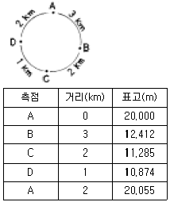

지적기사 (2005-03-06 기출문제)
1과목: 지적측량
1. 지적삼각점의 관측 및 계산에 있어서 수평각의 측각공차 중 기지각과의 차는 얼마 이내여야 하는가?
- ±40초
- ±50초
- ±1분
- ±1분 30초
(정답률: 알수없음)

2. 지적삼각보조점의 망구성으로 옳은 것은?
- 유심다각망 또는 삽입망
- 삽입망 또는 사각망
- 사각망 또는 교회망
- 교회망 또는 교점다각망
(정답률: 알수없음)
3. 측량준비도 작성시 사용되는 색이 잘못 연결된 것은?
- 측량기준점 - 검은색
- 도곽선 수치 - 붉은색
- 보정계수 - 붉은색
- 측량기준점간 거리 - 붉은색
(정답률: 알수없음)
4. 최소 제곱법의 이론을 적용하여 소거될 수 있는 오차는?
- 과오
- 정오차
- 부정오차
- 기계오차
(정답률: 알수없음)
5. 지적삼각보조측량에서 연결교차가 0.43m일 때 종선교차가 0.22m이었다면 횡선교차는?
- 0.48m
- 0.21m
- 0.37m
- 0.42m
(정답률: 알수없음)
6. 축척 1/600 지적도에서 원면적 569m2인 토지를 2필지로 분할하고자 면적을 측정하니 210m2와 350m2가 산출되었을 때 결정면적은?
- 3m2, 6m2
- 3.4m2, 5.6m2
- 213m2, 356m2
- 213.4m2, 355.6m2
(정답률: 알수없음)
7. 지적삼각보조측량을 다각망도선법으로 시행할 경우 1도선의 거리에 대한 기준은?
- 1㎞ 이하로 할 것
- 2㎞ 이하로 할 것
- 3㎞ 이하로 할 것
- 4㎞ 이하로 할 것
(정답률: 알수없음)
8. 측판측량을 교회법에 의하여 실시할 경우 시오삼각형의 내접원이 몇 mm이하일 때 중심점을 점의 위치로 하는가?
- 반지름 1mm 이하
- 반지름 2mm 이하
- 지름 1mm 이하
- 지름 2mm 이하
(정답률: 알수없음)
9. 다각망도선법에 의하여 지적도근측량을 실시함에 있어 배각법에 의할 때 1배각과 3배각의 평균값의 교차에 대한 기준은?
- 10초 이내
- 20초 이내
- 30초 이내
- 40초 이내
(정답률: 알수없음)
10. 축척 1/600지역에서 원면적 564m2의 토지를 분할하고자 할경우 신구면적의 오차허용면적은?
- 10.7m2
- 9.6m2
- 16.0m2
- 19.0m2
(정답률: 알수없음)
11. 도면의 등록사항이 아닌 것은?
- 도면의 색인도
- 삼각점의 위치
- 토지의 고유번호
- 건축물 및 구조물 등의 위치
(정답률: 알수없음)
12. 축척 1/1200 지적도 지역에서 도곽신축량이 △X1=-0.4mm, △X2=-1.0mm, △Y1=-0.8mm, △Y2=-0.6mm 일 경우 도곽선의 보정계수는?
- 1.0023
- 1.0032
- 1.0038
- 1.0083
(정답률: 알수없음)
13. 지적도근측량시 방위각 관측에서 종선오차가 -0.15m이고 측선장 수평거리 총합이 1725.49m일 경우 67.26m의 측선장에 배부할 종선오차 배부량은?
- -6㎝
- -2㎝
- +6㎝
- +2㎝
(정답률: 알수없음)
14. 다음 중 전자면적측정기에 의한 면적측정에 대한 설명으로 옳지 않은 것은?
- 측판측량방법으로 세부측량을 실시한 지역에 적용한다.
- 경위의측량방법으로 세부측량을 실시한 지역에 적용한다.
- 산출면적은 1/1,000 제곱미터까지 계산하여 1/10 제곱미터 단위로 정한다.
- 면적은 도상에서 2회 측정한다.
(정답률: 알수없음)
15. 경위의측량방법에 의한 세부측량을 실시할 경우 거리측정단위는?
- 0.1cm
- 0.5cm
- 1cm
- 5cm
(정답률: 알수없음)
16. 측판측량방법으로 세부측량을 방사법으로 할 때, 일반적으로 1방향선의 도상길이는 얼마이하로 해야 하는가?
- 5㎝
- 10㎝
- 20㎝
- 30㎝
(정답률: 알수없음)
17. 지적도면의 작성에 대한 설명으로 옳지 않은 것은?
- 도면은 측량결과도에 의하여 작성할 수 있다.
- 삼각점 및 지적측량기준점은 0.2mm 폭의 선으로 제도한다.
- 도면의 위쪽은 항상 북쪽이다.
- 도면에 등록하는 지번은 1㎜ 크기의 명조체로 한다.
(정답률: 알수없음)
18. 지적측량에 사용하는 좌표의 원점 중 서부원점의 위치는?
- 북위 38도선과 동경 129도선의 교차점
- 북위 38도선과 동경 127도선의 교차점
- 북위 38도선과 동경 125도선의 교차점
- 북위 38도선과 동경 123도선의 교차점
(정답률: 알수없음)
19. 지적삼각측량에서 각 측점에서 연직각을 관측하는 방법으로 옳은 것은?
- 정측으로 1회 측정한다.
- 정측으로 2회 측정한다.
- 정,반으로 1회 측정한다.
- 정,반으로 2회 측정한다.
(정답률: 알수없음)
20. 경위의측량방법에 의한 세부측량에서 토지의 경계가 곡선을 이룰 때 직선으로 연결하는 부분에 해당하는 곡선의 중앙종거의 길이는?
- 1cm 내지 5cm
- 5cm 내지 10cm
- 10cm 내지 15cm
- 15cm 내지 20cm
(정답률: 알수없음)
2과목: 응용측량
21. 곡선설치에서 교각 I = 90°, 곡률반경 R = 150m 일 때 곡선거리는?
- 212.6m
- 216.3m
- 223.6m
- 235.6m
(정답률: 알수없음)
22. 교각I = 60°, 곡선반경R = 150m인 노선의 시점에서 교점(I.P.)까지의 추가거리가 210.60m일 때 시단현의 편각은? (단, 중심말뚝은 40m마다 설치한다.)
- 0°45′50″
- 3°03′59″
- 6°16′20″
- 6°52′33″
(정답률: 알수없음)
23. 지형을 점고법과 같이 지표면을 x, y, z로 표시하고 이 모든점들의 집합을 모형화하여 중간점의 좌표치를 보간법으로 구하는 방법은?
- 지리정보체계(GIS)
- 토지정보체계(LIS)
- 지도정보체계(MIS)
- 수치지형모델(DTM)
(정답률: 알수없음)
24. 그림과 같이 A에서부터 관측하여 폐합 수준 측량을 한 결과가 다음과 같을 때 오차를 보정한 D점의 표고는?

- 10.819m
- 10.833m
- 10.915m
- 10.929m
(정답률: 알수없음)
25. 다음 중 지형도의 지형 표시 방법과 거리가 먼 것은?
- 모형도법
- 영선법
- 등고선법
- 점고법
(정답률: 알수없음)
26. 종중복도 60%, 횡중복도 30% 일 때 촬영 종기선의 길이와 촬영 횡기선의 길이의 비는 얼마인가?
- 7:4
- 2:1
- 3:1
- 4:7
(정답률: 알수없음)
27. 다음 평면곡선 중 완화곡선이 아닌 것은?
- 클로소이드 곡선
- 반향곡선
- 렘니스케이트 곡선
- 3차 포물선
(정답률: 알수없음)
28. 위성에 의한 원격탐사(Remote Sensing)에 관한 특징을 나타낸 것이다. 잘못된 사항은?
- 넓은 지역에 동시 측정이 가능하다.
- 각 위성의 회전주기가 일정하지 않으므로 관측시기, 장소의 변경이 가능하다.
- 얻어지는 영상은 정사투영상에 가깝다.
- 측정자료는 수치이므로 정량적(定量的)인 판독이 가능하다.
(정답률: 알수없음)
29. 사갱의 고저차를 구하기 위해 측량을 하여 다음 결과를 얻었다. A, B의 고저차는?(단, A점의 기계고와 B점의 시준고는 갱의 상부로부터 측정한 값이며 A점 기계고(I.H.)=1.15m, B점 시준고(Z)=1.56m, 사거리(L)=31.69m, 연직각(α)=+17°41'임)
- 9.63m
- 10.04m
- 15.6m
- 31.69m
(정답률: 알수없음)
30. 우리나라의 지적측량에서 지구의 표면을 평면으로 정하는 투영식으로 옳은 것은?
- 가우스상사 이중투영도법
- 방위도법
- 람베르토도법
- UTM도법
(정답률: 알수없음)
31. 완화곡선에서 곡선 반지름의 감소율에 대한 설명으로 옳은 것은?
- 캔트의 감소율과 비례한다.
- 캔트의 감소율과 반비례한다.
- 캔트의 증가율과 반비례한다.
- 캔트의 증가율과 비례한다.
(정답률: 알수없음)
32. 갱내 중심선 측량시 도벨을 설치하는 주된 이유는?
- 중심말뚝간 시통이 잘 되도록 하기 위해
- 차량 등에 의한 기준점 파손을 막기 위해
- 후속작업을 위해 쉽게 제거할 수 있도록 하기 위해
- 측량시 쉽게 발견할 수 있도록 하기 위해
(정답률: 알수없음)
33. 다음중 지구자기장의 3요소로 맞는 것은?
- 편각, 복각, 수평분력
- 편각, 경사각, 연직분력
- 편각, 수평각, 연직분력
- 편각, 연직각, 수평분력
(정답률: 알수없음)
34. 치수목적으로 사용되는 수위는 무엇인가?
- 최고수위
- 최고평수위
- 평균최저수위
- 평균최고수위
(정답률: 알수없음)
35. 스트립(Strip)에 관한 설명 중 틀린 것은?
- 촬영 비행방향으로 연속된 모델들의 집합이다.
- 비행코스와 같은 의미이다.
- 스트립간의 접합을 위한 작업이 접합표정이다.
- 스트립이 종방향으로 이루어진 것이 블럭(Block)이다.
(정답률: 알수없음)
36. 높이 60m의 굴뚝을 촬영고도 3000m의 높이에서 촬영한 항공사진이 있다. 여기서 주점기선 길이가 100㎜였다면 이 굴뚝의 시차차는?
- 1㎜
- 2㎜
- 5㎜
- 10㎜
(정답률: 알수없음)
37. 수치사진측량에서 영상정합(image matching)에 대한 설명이 아닌 것은?
- 저역통과필터를 이용하여 영상을 여과한다.
- 하나의 영상에서 정합요소로 점이나 특징을 선택한다.
- 나머지 영상에서 대응되는 공액요소를 찾는다.
- 대상공간에서 정합된 요소의 3차원위치를 계산한다.
(정답률: 알수없음)
38. 어느 한점에서 20㎞ 떨어진 지점에 측량을 할 때 양차의 계산으로 옳은 것은?(단, 지구의 곡률반경은 6,300㎞, 굴절계수 0.14임)
- 14.29ｍ
- 14.19ｍ
- 15.29ｍ
- 27.30ｍ
(정답률: 알수없음)
39. 지형도의 등고선 간격을 축척 1/50000인 경우 20m로 할 때 도상에서 표시될 수 있는 도상의 간격을 0.45㎜로 할 경우 등고선으로 표현할 수 있는 최대 경사각은?
- 40.1°
- 41.6°
- 44.6°
- 46.1°
(정답률: 알수없음)
40. 다음의 곡선설치 방법중 클로소이드 곡선을 설치하는 방법이 아닌 것은?
- 극각동경법
- 중앙종거법
- 극각현장법
- 현각현장법
(정답률: 알수없음)
3과목: 토지정보체계론
41. 전국의 총고용인구는 2500만명이고 전국의 제조업 고용인구는 1000만명이다. 그리고 가상도시의 총고용인구가 50만명이고, 가상도시의 제조업의 입지상은 1이다. 이때 입지상법에 의하여 가상도시의 제조업 고용인구를 계산한다면 몇 명인가?
- 10만명
- 20만명
- 30만명
- 40만명
(정답률: 알수없음)
42. 다음중 도시재개발의 분류에 속하지 않는 것은?
- 철거재개발
- 수복재개발
- 보전재개발
- 환지재개발
(정답률: 알수없음)
43. 페리(Perry)에 의한 근린주구의 규모를 설명한 것으로 틀린 것은?
- 학교까지는 최고 1,000m, 주구센터까지는 최고 600m내이다.
- 밀도가 ha당 100명이 안 되는 주구에 도로가 단지 내를 관통하지 않는 가구로 되어 있다.
- 1,000∼1,200명의 학생수를 가진 초등학교가 있는 구역을 말한다.
- 대략 65ha면적에 5,000∼6,000명의 주민이 산다.
(정답률: 알수없음)
44. 도시화(都市化)에 대한 설명으로 옳지 않은 것은?
- 도시화의 정도는 보통 전체인구에 대한 도시인구의 비율로 나타낸다.
- 공업화는 도시화를 촉진한다.
- 도시화는 사회조직의 분업화를 촉진한다.
- 후진국에서는 과도시화(過都市化)가 발생하지 않는다.
(정답률: 알수없음)
45. 도시의 거시적 내부구조에 관한 이론 모형 가운데 특히 소득계층별 주거지역의 발전방향에 역점을 두고 개발된 이론은?
- 선형이론
- 동심원이론
- 다핵심이론
- 지대이론
(정답률: 알수없음)
46. 다음 설명 중 옳지 못한 것은?
- 그리이스의 고대도시는 대부분 Agora를 갖고 있다.
- 로마의 고대도시는 Forum을 중심으로 도심이 형성되었다.
- 중세도시에는 궁전앞에 큰 광장이 도시중심을 이루었다.
- 르네상스 도시는 시청(city hall)앞 광장이 도시의 중심이었다.
(정답률: 알수없음)
47. 토지이용계획의 기본목표로 볼 수 없는 것은?
- 토지공간 수요의 합리적 배정
- 안정성 및 건전성
- 경제성과 쾌적성
- 기능상충 등의 복합성
(정답률: 알수없음)
48. 도시개발사업의 원활한 시행을 위하여 특히 필요한 때에 토지소유자의 동의를 얻어 환지의 목적인 토지에 갈음하여 시행자에게 처분할 권한이 있는 건축물의 일부와 당해 건축물이 있는 토지의 공유지분을 부여할 수 있는 환지는?
- 입체환지
- 공유환지
- 건물환지
- 대체환지
(정답률: 알수없음)
49. 도시경제에 있어서의 기반산업(basic industry)을 옳게 설명한 것은?
- 그 지역에서 부가가치의 발생이 가장 높은 산업이다.
- 타지역에 수출을 많이 하여 지역경제발전을 선도하는 산업이다.
- 3차산업을 제외한 직접생산에 종사하는 기초산업 이다.
- 군사주둔에 따른 보급품 생산 산업이다.
(정답률: 알수없음)
50. 도시기본계획의 원칙적인 수립자는 누구인가?
- 시장·군수
- 건설교통부장관
- 국무총리
- 행정자치부장관
(정답률: 알수없음)
51. 우리 나라 토지이용의 특성이 아닌 것은?
- 자연발생적으로 이용되고 있다.
- 생산과 생활공간을 혼합적으로 이용한다.
- 전근대적인 토지이용과 근대적인 토지이용으로 이중성을 띠고 있다.
- 소규모의 토지는 블록단위로 이용하고 있다.
(정답률: 알수없음)
52. 주민이 도시관리계획 입안을 제안할 수 있는 사항으로 볼 수 없는 것은?
- 지구단위계획의 수립에 관한 사항
- 국토개발 및 재개발사업에 관한 계획
- 지구단위계획구역의 지정에 관한 사항
- 기반시설의 설치·정비에 관한 사항
(정답률: 알수없음)
53. 에번즈 하워드(Ebenezer Howard)의 전원도시가 최초로 건설된 곳은?
- Letchmorth
- Welwyn
- Karlsruhe
- Frankfurt
(정답률: 알수없음)
54. 다음 중 국토이용 및 관리의 기본원칙과 거리가 먼 것은?
- 주거 등 생활환경 개선을 통한 국민 삶의 질 향상
- 자연환경 및 경관의 보전과 훼손된 자연환경 및 경관의 개선 및 복원
- 지역내 적정한 기능배분을 통한 사회적 비용의 최대화
- 국민생활과 경제활동에 필요한 토지 및 각종 시설물의 효율적 이용과 원활한 공급
(정답률: 알수없음)
55. 거대도시의 선착지(先着地)별 인구를 분석하면 다음중 어느 사항의 유입인구(流入人口)가 가장 많은가?
- 원거리 유입인구
- 중거리 유입인구
- 근거리 유입인구
- 해외유입인구
(정답률: 알수없음)
56. 다음 중 도시화의 지표라고 볼수 없는 것은?
- 인구의 증감
- 토지이용의 변화
- 도시기능의 증대
- 도시물가의 상승
(정답률: 알수없음)
57. 다음 중 공업지역의 세부 분류에 속하지 않는 것은?
- 전용공업지역
- 일반공업지역
- 준공업지역
- 중공업지역
(정답률: 알수없음)
58. 도시인구추정을 위한 인구분석지표 중 인구이동관계에 관한 지표가 아닌 것은?
- 지역간 인구이동율
- 도시전입, 전출인구
- 사회적 인구증가율
- 노령화지수
(정답률: 알수없음)
59. 도시의 무질서한 확산을 방지하기 위하여 설정되는 구역은?
- 시가화조정구역
- 개발제한구역
- 도시개발구역
- 도시계획구역
(정답률: 알수없음)
60. 인구이동의 가장 큰 이유는 경제적 이유때문이라고 하는데 인구이동이 지역간의 실질소득의 격차 때문에 발생하는 것이 아니라 미래의 지역간 기대소득의 차이 때문에 일어난다고 주장한 사람은?
- 프리드만(John Friedmann)
- 토다로(M.P. Todaro)
- 베버(A. Weber)
- 호텔링(Hotelling)
(정답률: 알수없음)
4과목: 지적학
61. "모든 토지는 지적공부에 등록해야 하고 등록전 토지표시 사항은 항상 실제와 일치하게 유지해야 한다" 는 지적제도의 등록형식은?
- 적극적 등록주의
- 소극적 등록주의
- 실질적 심사주의
- 당사자 신청주의
(정답률: 알수없음)
62. 지적학상 경계의 특성으로 옳지 않은 것은?
- 경계 설치자에 소속
- 필지간에 1개만 존재
- 위치만 존재
- 필지사이 공통 적용
(정답률: 알수없음)
63. 다음 중 1필지로 정할 수 있는 조건에 해당하는 사항은?
- 소유자가 동일할 것
- 지목이 다양할 것
- 지반이 불연속되어 있을 것
- 면적이 500제곱미터 이상일 것
(정답률: 알수없음)
64. 다음 중 일필지의 설명으로 적합하지 않은 것은?
- 소유권의 단위
- 토지 수량의 계수단위
- 토지의 등록단위
- 농지의 경작단위
(정답률: 알수없음)
65. 토지조사 사업시 토지의 사정에 대하여 불복이 있을 때의 이의(異議) 재결기관(裁決機關)은?
- 임시토지조사국장
- 지방토지조사위원회
- 도지사
- 고등토지조사위원회
(정답률: 알수없음)
66. 지적공부에서 토지를 말소할 수 있을 때는?
- 비과세지가 지목 변환된 때
- 과세지가 비과세지로 된 때
- 해면으로 된 때
- 과세지로 되었을 때
(정답률: 알수없음)
67. 토지 표시사항의 공시원칙에 따른 지적공부 관리원칙은?
- 보존주의
- 기밀주의
- 공증주의
- 공개주의
(정답률: 알수없음)
68. 지세징수를 위하여 이동정리를 끝낸 토지대장 중에서 민유과세지 만을 뽑아서 각 면마다 소유자별로 연기(連記)한 후 이것을 합계한 장부는?
- 지세명기장
- 결수대장
- 토지대장
- 을호 토지대장
(정답률: 알수없음)
69. 토지의 물권 공시제도로서의 지적과 등기가 각각 분담하는 관계로서 옳지 않은 것은?
- 토지 등록단위 결정 - 지적
- 토지위치 결정 - 지적
- 제한물권 설정 - 등기
- 신규등록지의 소유자 조사 - 등기
(정답률: 알수없음)
70. 다음 중 지적전산화의 주요 목적과 가장 거리가 먼 것은?
- 체계적이고 과학적인 지적사무와 행정실현
- 전국적인 등본열람 및 신속성 확보로 민원인의 편의 증진
- 최신의 지적통계와 정책정보의 정확성 제고
- 지적전산화를 통한 중앙기구의 통제 강화
(정답률: 알수없음)
71. 토지의 이동으로 볼 수 없는 것은?
- 경계의 변동
- 면적의 변동
- 축척의 변동
- 토지소유자의 주소변경
(정답률: 알수없음)
72. 토렌스시스템의 기본 원리 중 현재의 등기사항만 논의되어야 한다는 의미로서 현행 권리증명서에 기재된 권리가 실제의 권리관계와 일치하여야 한다는 이론은?
- 거울이론
- 보험이론
- 집합이론
- 커튼이론
(정답률: 알수없음)
73. 토지이용의 입체화와 가장 관련성이 깊은 지적제도의 형태는?
- 세지적
- 3차원 지적
- 2차원 지적
- 법지적
(정답률: 알수없음)
74. 토지등록부의 편성방법 중 토지를 중심으로 하여 등록부를 편성하는 방법은?
- 객체편성주의
- 물적편성주의
- 리코딩시스템
- 인적편성주의
(정답률: 알수없음)
75. 지적제도의 발달과정을 옳게 표시한 것은?
- 소유지적→과세지적→다목적지적
- 과세지적→소유지적→다목적지적
- 소유지적→다목적지적→과세지적
- 과세지적→다목적지적→소유지적
(정답률: 알수없음)
76. 토지조사사업 당시의 사정사항은?
- 소유자와 강계
- 지번과 지목
- 지번과 소유자
- 지번과 면적
(정답률: 알수없음)
77. 지적법상 지적에 대한 개념으로 거리가 먼 것은?
- 토지에 대한 기록
- 필지에 대한 기록
- 지적공부상의 기록
- 부동산등기부상의 기록
(정답률: 알수없음)
78. 다음은 지목의 변천에 관한 설명으로 옳은 것은?
- 토지조사사업당시 지목의 수는 21개였다.
- 최초 지적법이 제정된 후 지목의 수는 24개였다.
- 2000년의 지목의 수는 28개였다.
- 지목 수의 증가는 경제발전에 따른 토지이용의 세분화를 반영하는 것이다.
(정답률: 알수없음)
79. 다음은 현행 우리나라의 지적제도를 설명한 것이다. 가장 관계가 깊은 것은?
- 토지와 등기의 일원화 형태
- 토렌스제도
- 토지의 총등록 주의
- 등록의 자유의사 주의
(정답률: 알수없음)
80. 지적에 관한 설명 중 옳지 않은 것은?
- 필지를 중심으로 등록한다.
- 실제와 공부가 일치하는 것을 원칙으로 한다.
- 토지표시사항에 대한 변동사항을 등록한다.
- 토지에 대한 모든 물권의 변동사항을 등록한다.
(정답률: 알수없음)
5과목: 지적관계법규
81. 지적도 등록사항에 오류가 있음을 발견한 때 정정할 수 있는 방법에 대한 설명으로 적합치 않은 것은?
- 소관청은 직권으로 조사 또는 측량하여 이를 정정할 수 있다.
- 토지 소유자가 소관청에 그 정정을 신청할 수 있다.
- 오류사항 정정으로 인하여 인접 토지의 경계가 변경되는 경우 그 정정은 인접 토지소유자의 승낙서에 의하여야 한다.
- 오류사항이 토지소유자에 관한 사항일 때에는 지적공부등본에 의하여야 한다.
(정답률: 알수없음)
82. 행정자치부장관은 지적기술자가 규정에 위반한 경우에는 중앙지적위원회의 의결을 거쳐 징계를 하여야하는데 그 징계사유가 발생한 날로부터 최소 몇 년이 경과한 때에는 징계를 할 수 없는가?
- 1년
- 2년
- 3년
- 4년
(정답률: 알수없음)
83. 대지권등록부의 등록사항이 아닌 것은?
- 토지의 소재
- 대지권 비율
- 소유자의 성명
- 지목
(정답률: 알수없음)
84. 다음 중 미등기토지의 소유권 보존등기를 신청할 수 있는 자가 아닌 것은?
- 판결에 의하여 자기 소유권을 증명하는 자
- 수용으로 인하여 소유권을 취득하였음을 증명하는 자
- 시·군·구의 장의 서면에 의하여 자기의 소유권을 증명하는 자
- 토지대장등본에 의하여 자기가 토지대장에 소유자로서 등록되어 있는 것을 증명하는 자
(정답률: 알수없음)
85. 지적공부를 복구하고자 하는 때에는 복구하고자 하는 토지의 표시 등을 시·군·구의 게시판에 게시하여야 하는데 그 기간으로 옳은 것은?
- 10일
- 15일
- 20일
- 30일
(정답률: 알수없음)
86. 다음 중 물권(物權)의 객체(客體)가 될 수 없는 것은?
- 물건(物件)의 일부(一部)
- 재산권(財産權)
- 천연과실(天然果實)
- 유체물(有體物)
(정답률: 알수없음)
87. 환지방식에 의한 도시개발을 할 경우 환지계획에서 고려해야 할 사항으로 거리가 가장 먼 것은?
- 종전토지의 지목
- 종전토지의 면적
- 종전토지의 거래가격
- 종전토지의 토질
(정답률: 알수없음)
88. 토지소유자가 해야할 신청을 대위할 수 없는 자는?
- 학교용지, 도로, 수도용지등의 지목으로 될 토지는 그 사업시행자
- 지방자치단체가 취득하는 토지의 경우에는 그 토지를 관리하는 지방자치단체의 장
- 채권을 보전하기 위한 채권자
- 토지점유자
(정답률: 알수없음)
89. 국토의계획및이용에관한법률상 토지거래계약에 관한 허가 구역의 지정대상이 되는 곳은?
- 토지의 거래가 성행하는 구역
- 지가가 급격히 상승할 우려가 있는 구역
- 용도지역의 예정구역
- 특수한 자연경관을 보호해야 할 구역
(정답률: 알수없음)
90. 다음 중 지목의 표기방법으로 맞지 않는 것은?
- 잡종지 : 잡
- 구거 : 구
- 유원지 : 유
- 공원 : 공
(정답률: 알수없음)
91. 소관청이 축척변경을 실시한 후 청산금의 산출결과 증·감된 면적에 대한 청산금의 합계에 차액이 생긴 경우의 처리방법은?
- 초과액은 토지소유자의 수입으로 하고 부족액은 토지소유자가 부담한다.
- 초과액은 토지소유자의 수입으로 하고 부족액은 당해 지방자치단체가 부담한다.
- 초과액은 당해 지방자치단체의 수입으로 하고 부족액은 토지소유자가 부담한다.
- 초과액은 당해 지방자치단체의 수입으로 하고 부족액은 당해 지방자치단체가 부담한다.
(정답률: 알수없음)
92. 지번변경승인신청시 필요한 서류가 아닌 것은?
- 지번변경사유를 기재한 승인신청서
- 지번변경대상지역의 지번별조서
- 지번변경대상지역의 일람도 사본
- 지번변경대상지역의 지적도 및 임야도의 사본
(정답률: 알수없음)
93. 용도지역안에서의 건폐율의 최대한도를 나타낸 것으로 틀린 것은?
- 주거지역 : 70% 이하
- 상업지역 : 80% 이하
- 공업지역 : 70% 이하
- 녹지지역 : 20% 이하
(정답률: 알수없음)
94. 다음은 건축법상 용어의 정의를 설명한 것이다. 틀린 것은?
- "이전"이란 기존 건축물이 있는 위치에서 다른 대지의 위치로 옮겨 축조하는 것이다.
- "개축"이란 기존건축물을 전부 또는 일부를 철거하고 그 대지 안에 종전과 동일한 규모의 범위 안에서 다시 축조하는 것이다.
- "증축"이란 기존건축물이 있는 대지 안에서 연면적·층 수 등을 증가시키는 것이다.
- "재축"이란 재해에 의하여 멸실된 경우에 그 대지 안에서 종전과 동일한 규모의 범위 안에서 다시 축조하는 것이다.
(정답률: 알수없음)
95. 축척변경사업시 청산금의 납부고지 또는 수령통지는 언제 하는가?
- 청산금조서 작성한 날로부터 30일이내
- 청산금조서 작성한 날로부터 20일이내
- 청산금 결정공고한 날로부터 30일이내
- 청산금 결정공고한 날로부터 20일이내
(정답률: 알수없음)
96. 토지소유권의 범위에 대한 설명으로 가장 타당한 것은?
- 공공의 이익이 있는 범위내에서 토지의 상하에 미친다.
- 적당한 이익이 있는 범위내에서 토지의 상하에 미친다.
- 법률이 정한 이익이 있는 범위내에서 토지의 상하에 미친다.
- 정당한 이익이 있는 범위내에서 토지의 상하에 미친다.
(정답률: 알수없음)
97. 현행 지적법에 규정된 벌칙규정 중 가장 무거운 벌을 받는 경우는?
- 규정에 의한 등록증을 다른 사람에게 빌려준 자
- 법에 의한 신청을 허위로 한 자
- 규정에 의한 등록을 하지 아니하고 지적편집도를 간행한 자
- 규정을 위반하여 고의로 지적측량을 잘못한 자
(정답률: 알수없음)
98. 등기신청이 있을 경우 등기관이 실질적으로 조사할 수 있는 사항은?
- 소유권에 관한 사항
- 토지표시에 관한 사항
- 구분건물 표시에 관한 사항
- 부동산의 멸실에 관한 사항
(정답률: 알수없음)
99. 소관청인 시장, 군수, 구청장이 촉탁등기를 하지 않아도 되는 토지 이동은?
- 소유자가 신청한 토지분할
- 소유자가 신청한 등록전환
- 소유자가 신청한 신규등록
- 소유자가 신청한 토지합병
(정답률: 알수없음)
100. 다음 중 지구단위계획의 내용에 포함되지 않는 것은?
- 대통령령이 정하는 기반시설의 배치와 규모
- 건축물의 용도제한
- 환경관리계획 또는 경관계획
- 인구 또는 산업기능 배분계획
(정답률: 알수없음)